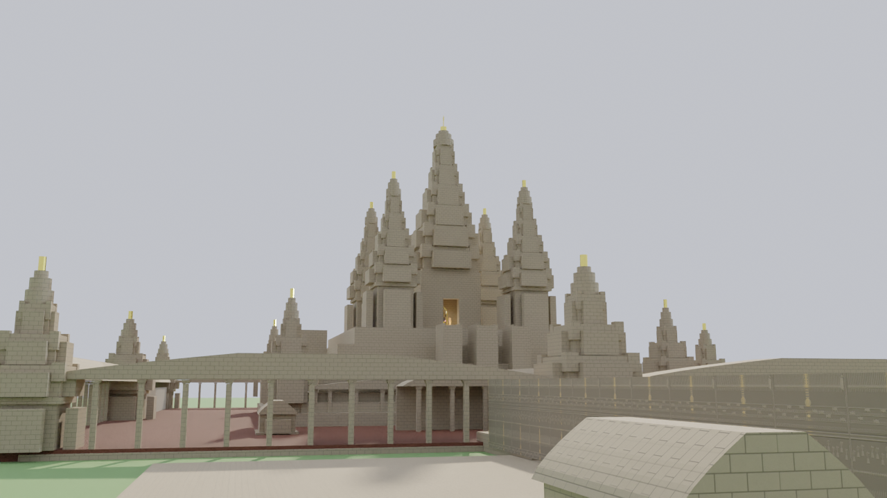

High-fidelity 3D procedural architecture built with Blender 3.6 LTS and Cycles ray-tracing. Featuring Mount Meru quincunx towers, Samudra Manthana bas-relief friezes, and authentic Sanskrit epigraphy.
Click and drag to rotate the temple, scroll to zoom, and right-click to pan. Click the presets below for guided viewpoints.
angkor_wat_complete.glb (Binary glTF 2.0 with embedded PBR materials)
High-resolution multi-camera ray-traced frames produced with Blender Cycles and Intel OpenImageDenoise.

The world-famous hero angle across the sacred northern reflection pool, showing the golden sun illuminating the five lotus towers of Mount Meru reflected in the calm waters.
Recreation of the royal epigraphic stela standing on the Western Avenue landing, engraved with authentic Vedic Sanskrit hymns honoring Lord Vishnu's cosmic strides.
OM NAMO BHAGAVATE VĀSUDEVĀYA
SRI ANGKOR WAT — PARAMAVISHNULOKA • REIGN OF KING SURYAVARMAN II
"Viṣṇor nu kaṁ vīryāṇi pra vocaṁ yaḥ pārthivāni vimame rajāṁsi |
yo askabhāyan uttaraṁ sadhasthaṁ vicakramāṇas tredhorugāyaḥ ||"
Translation: "I will declare the mighty deeds of Lord Vishnu, Who measured out the earthly regions, Who established the high sanctuary on high, striding wide thrice with His vast steps."
"Pra tad viṣṇuḥ stavate vīryeṇa mṛgo na bhīmaḥ kucaro giriṣṭhāḥ |
yasyoruṣu triṣu vikramaṇeṣv adhikṣiyanti bhuvanāni viśvā ||"
Translation: "For this heroic prowess Vishnu is lauded, like a fierce mountain beast roaming free; in Whose three wide strides all created realms and living beings abide."
Chaturbhuja Vishnu (Conch, Discus, Mace, Lotus) established as the sacred Axis of Mount Meru. Churning of the Primordial Ocean (Samudra Manthana) by 88 Devas and 92 Asuras with Kurma Avatar as the eternal pivot. Kambujadese Paramesvara Devaraja Sthapitam.
Macro photograph render of the freestanding Royal Stela on the Western Avenue landing.
How Angkor Wat translates sacred Vedic cosmology into monumental stone geometry.
The 190m-wide outer moat represents the cosmic ocean encircling the universe. 1.5 km by 1.3 km in rectangular perimeter, its stepped laterite banks protect the temple foundation and maintain hydraulic balance.
The 70m sandstone causeway across the moat functions as a symbolic rainbow bridge between the terrestrial mortal realm and the divine sphere, flanked by seven-headed Naga serpent balustrades.
The five lotus prasat towers arranged in a quincunx represent the five peaks of Mount Meru, axis mundi of the universe. The central Prasat Thom rises 65m above ground directly over the Garbhagriha.